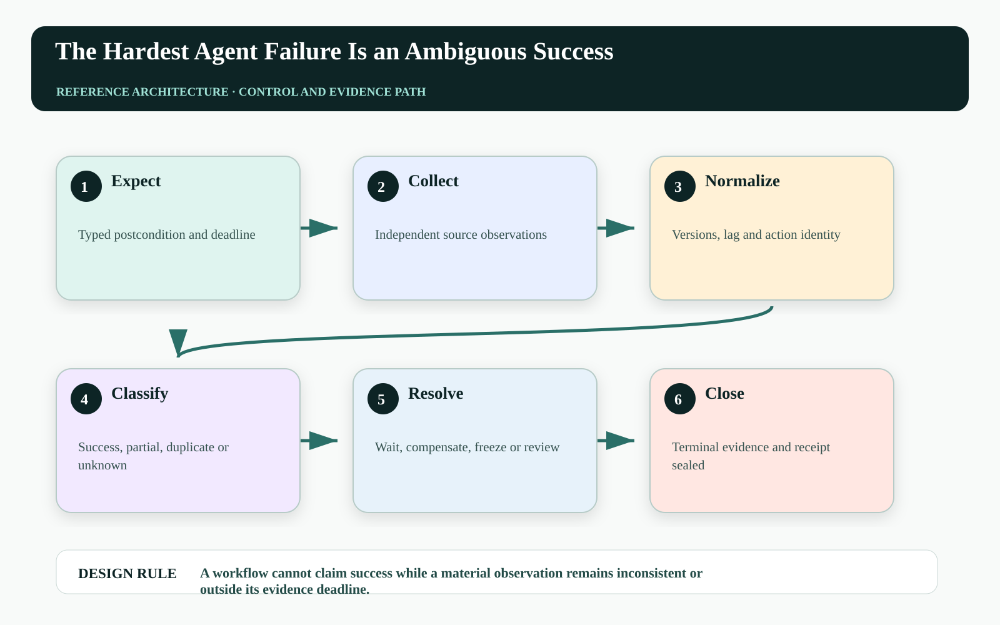
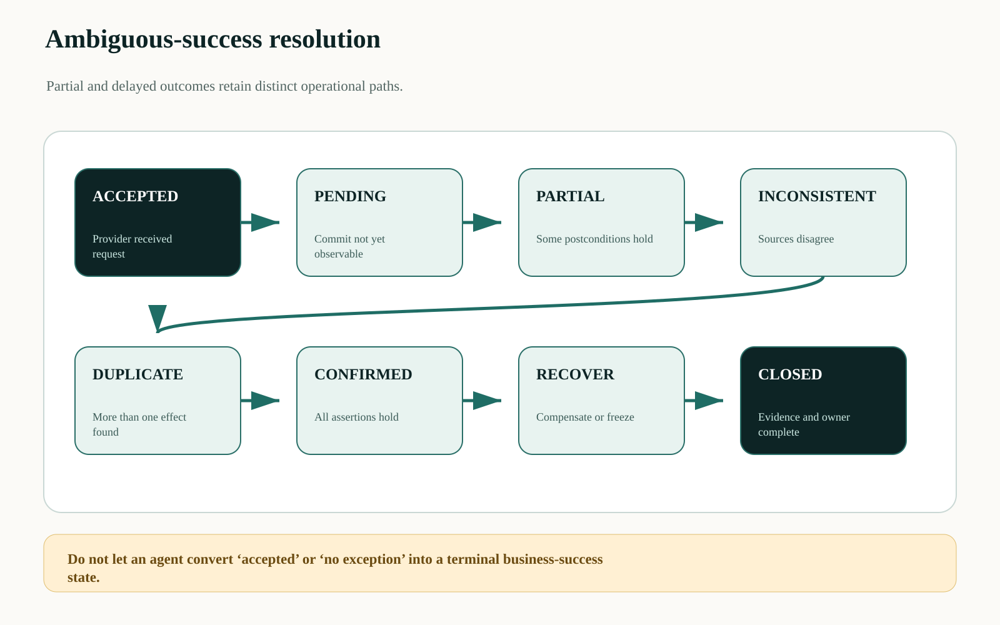
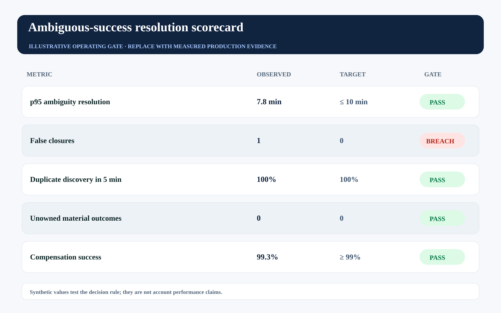

This story was developed with AI writing and visualization assistance. All incidents, thresholds, workloads, and operating values are illustrative unless a source is explicitly cited.
Clear failures are operationally generous. They stop the workflow and give an operator something concrete to inspect. Ambiguous success is worse: the API accepted the request, part of the workflow progressed, downstream state will settle later, and every dashboard chooses a different definition of done.
Agents amplify this ambiguity because they chain tools, reinterpret responses, and continue planning. A plausible success narrative can be generated before authoritative systems agree on the business outcome.
Success is not a status code. It is a verified postcondition reached before an economic deadline, with every partial effect accounted for.

One success label collapses four distinct states#
A command can be accepted but not committed, committed but not propagated, partially committed across systems, or committed more than once. A stale read can make a good effect look absent; an optimistic tool adapter can make a rejected effect look complete. Collapsing these states prevents correct retry and recovery.
The workflow needs an outcome taxonomy and evidence precedence. Provider acceptance, durable workflow state, authoritative resource version, downstream ledger state, and customer-visible effect are separate observations with different lag and authority.
Create an outcome-resolution service#
The service starts with a typed intended postcondition and a completion deadline. It collects observations from independent systems, applies source-specific lag models, and classifies the action as confirmed success, confirmed failure, partial, duplicate, delayed, inconsistent, or unknown.
A policy maps each class to wait, re-observe, reconcile, compensate, freeze, or human decision. The agent can provide hypotheses, but only the resolution service advances terminal state and seals the receipt.

Use evidence age and consequence to choose the next observation#
For observation source s, prioritize information value net of delay and query cost:
VOI(s,t) = ExpectedReduction[OutcomeEntropy | observe(s,t)]
- C_query(s) - C_delay(t)
resolve when posterior confidence crosses class threshold AND required authoritative assertions holdConfidence alone cannot override a mandatory assertion. The model helps order observations; policy defines which facts are indispensable for commercial or safety closure.
| Outcome class | Evidence pattern | Permitted transition |
|---|---|---|
| Pending | Within known propagation lag | Wait and observe |
| Partial | Subset of assertions true | Complete or compensate |
| Inconsistent | Authoritative sources disagree | Freeze and reconcile |
| Duplicate | Count exceeds one | Contain and compensate |
| Confirmed | All required assertions hold | Seal success receipt |
Represent success as a set of assertions#
A compound business action needs more than one boolean:
outcome_contract: renewal-adjustment-v3
deadline_seconds: 300
assertions:
- source: crm-primary
expect: quote.version == 43 and quote.discount_bps == 800
- source: billing-ledger
expect: count(adjustment where action_id == A) == 1
- source: communication-log
expect: message.approval_ref == approval_id
terminal_success: all(assertions)
on_deadline: freeze_and_assign_ownerEach assertion carries an evidence source, lag allowance, and failure owner. The contract is versioned with the action so later schema changes cannot silently redefine success.
Make ambiguity visible as inventory#
Track ambiguous actions by class, age, exposure, dependency, and owner; partial-to-terminal time; duplicate discovery lag; false closures reopened later; and compensation success. The backlog should behave like an incident queue, not a log-search exercise.
The synthetic gate shows p95 resolution passing but false closure breaching. One action closed incorrectly is more serious than a slightly slower but honest unknown.

| Operating signal | Decision use | Failure interpretation |
|---|---|---|
| False closure | Incident and control review | Success criteria or evidence path failed |
| Partial duration | Escalate domain owner | Cross-system completion is stuck |
| Source inconsistency | Freeze related authority | Authoritative systems disagree |
| Ambiguous exposure | Prioritize by consequence | Unknown state is economically material |
Failure-injection before production#
A design review cannot prove A workflow cannot claim success while a material observation remains inconsistent or outside its evidence deadline. The pre-production harness must interrupt the system at the transitions where ownership, authority, evidence, and business state can disagree. The objective is not to maximize a generic pass rate. It is to demonstrate that every material fault produces a bounded state, a named owner, and an admissible recovery transition.
| Injected fault | Experiment | Required evidence |
|---|---|---|
| Delayed or reordered work | Pause the path after PENDING and release it after DUPLICATE | The stale path cannot manufacture terminal success |
| Authority becomes stale | Advance policy, mode, ownership, or resource version before effect commit | The final gateway rejects the old decision context |
| Evidence is missing or corrupted | Remove one authoritative observation or change its digest | The outcome remains violated, inconclusive, or owned—never guessed |
| Recovery itself fails | Interrupt compensation, handoff, or receipt closure | The action stays visible with an owner, deadline, and next legal transition |
Run the matrix at concurrency, with realistic dependency lag and with the same policy and gateway versions used in the candidate release. Report p95 and p99 resolution alongside the worst unresolved example. Averages can demonstrate throughput; they cannot erase a single material breach. Promotion should require replayable evidence for the controls, not a slide stating that the team considered the risk.
Three questions for the architecture review#
Where is truth decided? Name the authoritative source and the exact component permitted to advance the workflow into a terminal state. If the answer is ‘the agent interprets the tool response,’ the boundary is not yet independent.
Where is authority finally enforced? Follow the command through every queue, adapter, cache, provider, and downstream effect. A policy decision is useful only when the last material write boundary can reject a stale, changed, or excessive action.
What blocks promotion? Convert the scorecard into executable gates with owners and expiry. A breached tail metric must reduce scope, hold the cohort, or enter an approved exception path; it cannot remain decorative telemetry.
A practical implementation sequence#
1. Define one compound success contract. List each required business assertion and its authoritative source.
2. Preserve non-terminal states. Prevent adapters and agents from flattening accepted, pending, partial, and unknown into success.
3. Fault-test evidence lag. Delay replicas, duplicate downstream messages, and partially commit workflows while verifying correct classification and ownership.
Primary references and boundaries#
AWS's idempotent API guidance discusses late requests, retries, and semantic intent. RFC 9110 distinguishes request-method semantics from application-specific outcomes. The compound outcome taxonomy is a proposed agent control.
Evidence can remain uncertain beyond the deadline. The correct response is owned ambiguity and controlled recovery—not a fabricated terminal label.
The operating conclusion#
The most dangerous agent success is the one nobody can independently reproduce. Make success a contract over observable business state, preserve every non-terminal class, and let recovery begin before ambiguity becomes history.
Which of your agent workflows can return success before all downstream business assertions are observable?